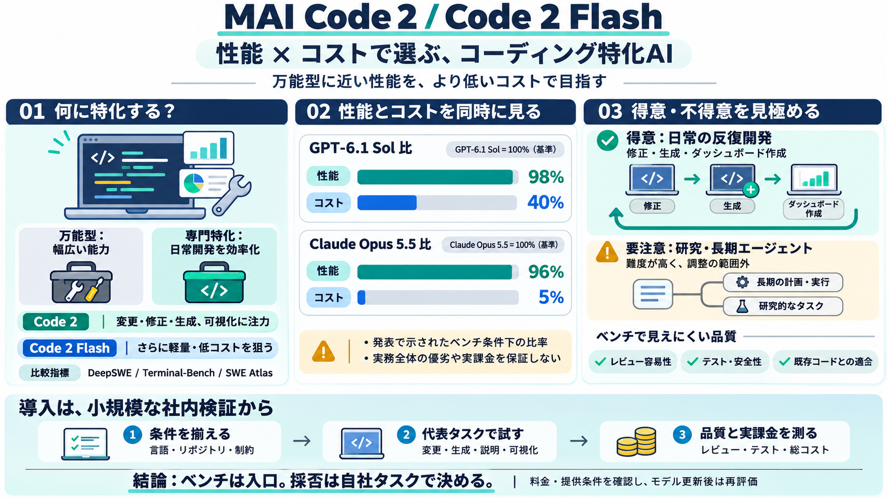

MAI Code 2 and Code 2 Flash: Everyday coding at scalable prices | Microsoft AI
Averaged over four widely used benchmarks that target the everyday enterprise coding tasks we see in GitHub Copilot (Dee…

Averaged over four widely used benchmarks that target the everyday enterprise coding tasks we see in GitHub Copilot (Dee…
| Benchmark | Score | Versus best verified row | Gap | Who ran it | Use in ranking | --- --- --- | | DeepSWE | 73.2% …
The 5% price is a temporary promotional rate until 2027; the real price is closer to 10% of Opus. The 96% performanc…
# Microsoft AI on X: "For MAI Code 2, we use an average of DeepSWE 1.1, Terminal Bench 2.1, SWE-Atlas and FrontierCode v…
The counter-evidence is about cost and time, and it is real. On the same index, Claude Code with Opus 5.5 averages $13.0…